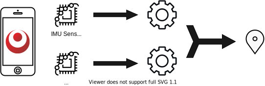
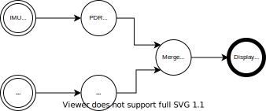
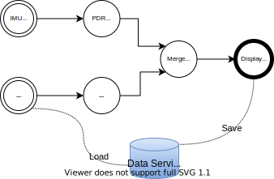
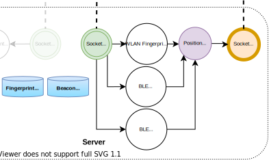
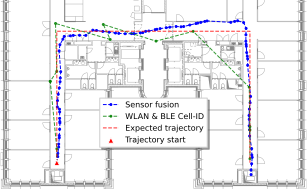

What is OpenHPS?
An Open Source Hybrid Positioning System

What is OpenHPS?
An Open Source Hybrid Positioning System
- Any technology
- Any algorithm
- Various use cases
- Flexible processing and output
- Accuracy over battery consumption, reliability, ...
- Aimed towards
- Developers
- Researchers
Process Network Design
Process Network Design ...
Process Network Design ...
Modularity

Modularity ...
Communication
Socket, MQTT, REST API, ...
Data Storage
MongoDB, LocalStorage, RDF, ...
Positioning Algorithms
IMU, fingerprinting, OpenVSLAM, ...
Abstractions
Geospatial, location-based services, geojson, ...
Other
React-Native, NativeScript, Sphero, ...
Data Processing
DataObject

Absolute and Relative Positions
Absolute
- 2D, 3D, Geographical, ...
Relative
- Distance, angle, velocity, ...
- Relative to another object
ReferenceSpace
An absolute position can be relative to a reference space.
DataFrame
DataFrame ...
Pushing Data

DataFrame ...
Pulling Data

DataFrame ...
Pushing Error
SymbolicSpace
An object that semantically defines a space
- Spatial hierarchy
- Graph connectivity with other spaces
- Geocoding
- GeoJSON compatibility
- Can be used as a location
- Can be extended ...
SymbolicSpace ...
ts
Location-based Service
Location-based Service ...
Location-based Service ...
Demonstration
- Indoor positioning use case
- Use existing techniques
- Validation of flexibility and modularity

Positioning Model

Positioning Model ...

Positioning Model ...
Positioning Model ...
Positioning Model ...
Positioning Model
Online App
Positioning Model
Online App
ts
Dataset
Dataset ...
Total BLE Beacons: 11
Total detected WLAN access points: 220
Total stable WLAN access points: 199
| Training | Test | |
|---|---|---|
| Datapoints | 110 | 30 |
| Total fingerprints | 440 | 120 |
| Duration (per orientation) | 20s | 20s |
| Avg. WLAN Scans (per fingerprint) | 6 | 6 |
| Avg. BLE Advertisements (per fingerprint) | 16 | 15 |
Validation Results
Static Positioning
| WLAN fingerprinting | BLE fingerprinting | BLE multilateration | Fusion | |
|---|---|---|---|---|
| failed points | 0 | 6 | 12 | 0 |
| average error | 1.23 m | 3.23 m | 4.92 m | 1.37 m |
| minimum error | 0.01 m | 0.17 m | 0.74 m | 0.01 m |
| maximum error | 4.77 m | 15.39 m | 19.26 m | 9.75 m |
| hit rate | 95.82 % | 80.83 % | 52.50 % | 96.67 % |
Validation Results ...
Trajectories
Validation Results ...
Trajectories
| WLAN + BLE | WLAN + BLE + IMU | |
|---|---|---|
| average error | 3.28 m | 1.26 m |
| maximum error | 9.60 m | 3.10 m |
| average update frequency | 3.04 s | 0.52 s |
Contributions and Conclusions
- OpenHPS: open source framework for hybrid positioning
- Aimed towards developers and researchers
- Abstractions such as location-based services and spaces
- Validation of an indoor positioning use case
- Configurable and interchangeable nodes and services
- Public dataset with multiple orientations

Visit https://openhps.org for additional resources,
documentation, source code and more!